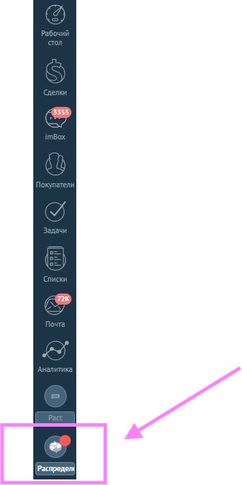
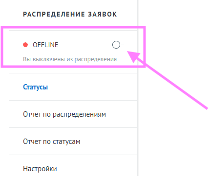

Регламент рабочего дня
График смен, обеденный перерыв, статус в виджете «Распределение» и коммуникация в команде
График и время смены
График работы: два рабочих дня через два выходных. Начало рабочего дня — с 9:00 до 21:00 по московскому времени.
- Смена: 2 через 2 (рабочие / выходные)
- Рабочие часы: 9:00–21:00 (МСК)
Обеденный перерыв
В смену заложен обеденный перерыв 60 минут.
- Перерыв рекомендуется дробить на 2 или 4 части — на усмотрение сотрудника.
- Нежелательно брать перерыв одним блоком на 60 минут, но если необходимо — можно.
- Нужно сообщать коллегам-координаторам в чате об уходе на обед и о возвращении.
Виджет «Распределение»
На время обеда установите в виджете статус «Оффлайн» — так вас исключат из очереди распределения на период перерыва.
Когда вернётесь, обязательно смените статус на «Онлайн».


Чат «Команда Координации»
Обязательные сообщения в корпоративном мессенджере Пачка — чтобы коллеги понимали, кто на смене и доступен для вопросов.
- Каждое утро перед началом смены — «Доброе утро».
- Перерыв и обед — сообщить, что ушли на перерыв / обед, и что вернулись.
- Вопросы в течение смены, если они могут быть полезны остальным коллегам.
- В конце смены — отправить отчёт по принятому в отделе формату.
Новости отдела
Чат «Новости Координация» — посты с обновлениями процессов и правил.
- На новости ставьте реакцию, чтобы было видно, что ознакомились.
- После выходных — прочитайте все новости за период отсутствия, чтобы быть в контексте.
Работа в системах на смене
- amoCRM — сделки, звонки, задачи, примечания (см. день 3).
- ЛК — заявки, подбор, вводные (см. личный кабинет).
- Пачка — рабочие чаты и оперативные вопросы (см. день 5).
- Закрывайте задачи и обновляйте этапы вовремя — это часть регламента смены, а не «по остаточному принципу».
Совет: Не пишите клиентам от лица «другой смены» без необходимости — в переписке и чатах с коллегами важно, чтобы было понятно, кто ведёт вопрос. См. блок про персонализацию в «Общение с клиентами».